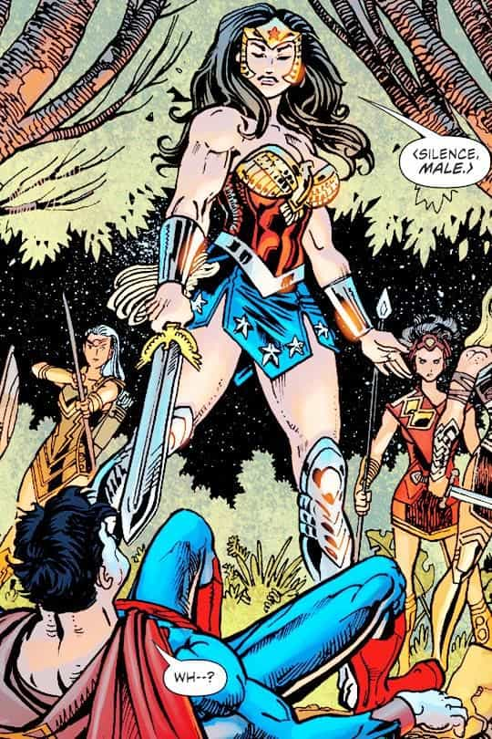

I'm a heterosexual anti-feminist and a conservative male. A frequent news watcher and I dedicate my findings to various MRA sites and anti-feminist authors. I enjoy swimming, hiking, observing mainstream entertainment and masculine literature.


From comics, movies, anime, gaming, and now the more recent kids shows, feminists will use any kind of tactic to promote their evil. Stories like Rapunzel or The Sleeping Beauty have been a part of our childhood, teaching us about gender roles and the importance of them. Now they have been changed in various ways to suit modern women, giving them unrealistic expectations of what they can be. Here are nine characters that show how they have infiltrated entertainment.
The show deals with an entire species that is genderless but has feminine traits (female human forms), Steven is a male protagonist that is not masculine in a lot of ways. Rather than being the strong fighter type, he acts through femininity despite being male. He cries for help from women rather than helping himself. The show contains trans, queer and homosexual characters which is typical for a show like this. They have women of different sizes and has quite a dark story line for a show aimed for children. Cartoon Network is now giving a way for brainwashing, glorifying obese women and unhealthy diets.
They even place the emphasis on disguised leftist concepts like:
But despite all these teachings, SJWs bullied a Steven Universe artist to attempt suicide because she drew Rose (an obese female character) too thin. Hypocritical? Yes. It certainly has one of the most cancerous fanbases, consisting of bronies and white knights.

Not even girls want to be girls so long as our feminine archetype lacks force, strength, and power. Not wanting to be girls, they don’t want to be tender, submissive, peace-loving as good women are. Women’s strong qualities have become despised because of their weakness. The obvious remedy is to create a feminine character with all the strength of Superman plus all the allure of a good and beautiful woman.”
– William Moulton Marston, in a 1943 issue of The American Scholar.
Comics publisher Max Gaines asked him to create a new superhero for their comics, to fill the void he felt existed with something new. The creator knew that he wanted his hero to embrace love over violence, and to value peace over war. He assumed that women value love and peace. He valued independent, educated, and unconventional women.
Wonder Woman remains a feminist icon 75 years after her creation, because she symbolizes the idea of female domination. According to NY Post, Wonder Woman was not ‘feminist’ enough for Social Justice Warriors, because SJWs and feminists are never happy with anything in society until white men are silenced. Most wonder woman comics were terrible, but the media keeps pushing it on readers that they HAVE to give in.
Buffy the Vampire Slayer creator Joss Whedon is allegedly a woke male feminist ally. He’s a mangina allegedly known for directing “strong female characters”. His characters are unrealistic as women simply can never be tough. He cares about fake women’s issues like the pay gap and the alleged success of lady Ghostbusters. Joss is directing Batgirl, the story about a super heroine who is basically Batman but a woman. Currently he’s facing back-lash on Twitter, but in smaller amounts due to more and more people accepting these kind of reboots.
This game is tainted by women who blame their problems on men. Basically, every character in Overwatch has different victory pose animations that a player can unlock and choose from. And for the time-traveling character Tracer (one of the female characters in the game), her victory pose gives players a wonderful view of her buttocks, clad in skin-tight leggings. Obviously, if men are enjoying something there must be feminist intervention, so Blizzard changed her appearance and stated:
We’ll replace the pose. We want *everyone* to feel strong and heroic in our community. The last thing we want to do is make someone feel uncomfortable, under-appreciated or misrepresented. Apologies and we’ll continue to try to do better.
Women expose themselves to men in conventions, and when they are assaulted they complain that “men should respect women,” even when their own clothes were designed to attract men. But when a character in a video game wears skimpy clothing, there is an outright backlash against it. Overwatch is even taking strides to be LGBT inclusive. This marks the end of straight white man in entertainment.
Wandering Son follows two fifth graders who do not identify with the genders they were assigned at birth. Shuichi Nitori identifies as a girl, and Yoshino Takatsuki identifies as a boy. This series marks the end of an era, modern anime has come to suit feminist tastes. The rest is pretty self explanatory.

The 80s film, starring Tom Hanks and Daryl Hannah, is set for a reboot with Channing Tatum starring as the “merman”. The original Splash was about a man, Allen Bauer (Hanks), who falls in love with the mermaid (Daryl Hannah) who rescued him when he was a boy. Their relationship is hampered somewhat by the fact that the mermaid (who later names herself Madison) has to return to the sea after just a few short days, and also by the deranged scientist determined to prove that merpeople are real by throwing water at her.
Since the announcement, many feminists have been celebrating the gender swap on social media – particularly Tatum’s casting as a merman as some kind of feminist victory… but why? Because of the casting of a white, straight male in a role that was originally held by a woman. Hollywood’s content has become more man-hating than ever before. Seeing men in feminine roles is a way of brainwashing men to be submissive and less masculine.
Gender swapping is fast becoming a fail-safe way for Hollywood to shut up anyone who kicks off about equality without actually having to write anything new: Cinderella, Beauty and the Beast, Sleeping Beauty, 101 Dalmatians, Ghostbusters. All these films have either been made or are in the works and all of them have some kind of “feminist twist”. I’ve seen these gender bends in anime too, although no one seems to notice because anime gender bending is normalized.
Your character is non-ambiguous (genderless) and non-white, which one could assume it is Asian or Mexican. They never refer to you as “him” or “her”. Despite having a small amount of characters, it managed to include homosexual relationships and a transgender robot. There are more homosexual couples than their opposite counterparts, and both the prominent female characters break out of gender roles. Undyne being the best fighter in the underground, another unrealistic feminist expectation that women can be better than men.
Do you see where “progressiveness” in gaming is really heading? Because the game pushes “progressive propaganda”. One of the major themes of the game that people have been gloating about is the notion that gay relationships are wonderful and perfect, straight relationships are doomed, diversity is strength, promoting inter-species romantic relationships, and it’s primarily because of this thematic content that the game gets praised. That is why Tumblr is spamming the votes, and the media is circle-jerking over the game. Nearing the end of the game I dawned upon the similarities of this game and Steven Universe. There’s nothing particularly special about the game except for discreetly lecturing you about homosexuality and political correctness.
Cross-dressing degenrate
It redefined the “magical girl” genre in its native Japan and its overseas influence has shown up in girl-power shows like The Powerpuff Girls and is the definition of a feminist anime. Haruka and Michiru, the series’ Sailor Uranus and Neptune, were a lesbian couple who helped girls around the world come to terms with their sexuality (lesbian propaganda). The series also makes a point of looking down on femininity, by showing how the less feminine girls have trouble coping with gender roles, like how Makoto learned to cook because she was teased for being a tomboy.
Though, I somewhat find it astonishing that the creator of the site anime feminist doesn’t care about “fanservice”, which is short softcore porn scenes, it occured to me because they know about the female supremacy in anime.
The creators of the game met with resistance to make the protagonist female. It’s a story about a girl named Max who learns that she can time travel. Life is Strange are some of the few games that are telling women’s untold stories in ways that make it seem as if women have it harder.
It’s simply a game made to exaggerate and show how cruel men can be to women (almost every man in the game is either a loser or a woman beating trash). It attempts to lecture you and say things like “these men need to be in check” whenever it finds the chance to. This game was published by SQUARE ENIX who also published Tomb Raider. Why is it that those people who push equality so much then decide to make a game where it’s about the girl, never around the male?
Modern entertainment is becoming more about social justice than hardware, software, story, gameplay, or animation, while we get to endure feminists complain about everything they don’t like, ruining entertainments we were once able to enjoy.
Read Next: How Feminism Is Ruining “Game of Thrones”